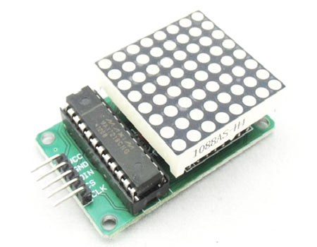

Nous avons fait des recheches pour trouver avec quoi on pourrait faire les yeux. Nous avons décidé de prendre des Matrix de LED 8x8:

Ensuite, nous avons chercher des façons pour le programmer. Nous avons trouver un modèle qui nous permet d'afficher tout ce que l'on veut sans utiliser de librairies. Lien: http://yaab-arduino.blogspot.ca/2015/05/beating-heart-with-arduino-and-max7219.html
Ce code nous permet de modifier la valeur de chacune des LEDs en utilisant un 'Array'
Ex le code suivant dessine un coeur:
const unsigned char heart[] =
{
B01100110,
B11111111,
B11111111,
B11111111,
B01111110,
B00111100,
B00011000,
B00000000
};
Chaque ligne contient 8 chiffres.
Si un chiffre est égale à 0, la led seras éteinte.
Si un chiffre est égale à 1, la led seras ouverte.
Nous avons donc modifier la variable heart et nous avons fait un oeil à la place. Vidéo:
Nous avons brancher un autre oeil et l'arduino était capable de faire fonctionner les deux relativement facilement.
Vous pouvez jetter un coup d'oeil à notre code ici: https://github.com/technonerdz/School-work/blob/master/citrouille/programs/eyes.ino
Vous pouvez le télécharger ici: http://www.felixgiffard.com/School-work/citrouille/programs/eyes.ino